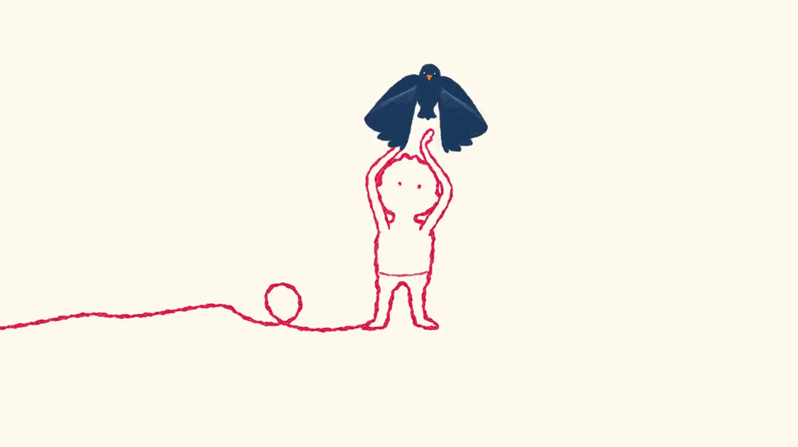
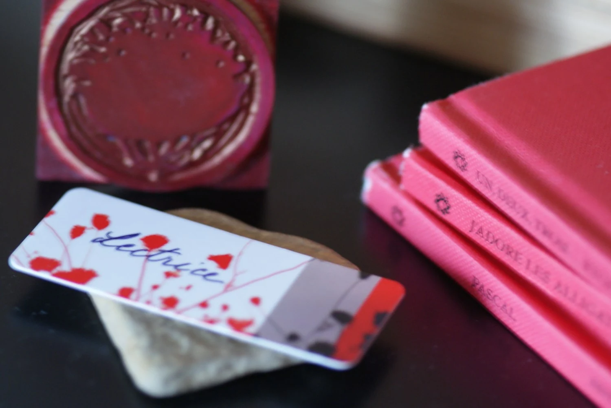
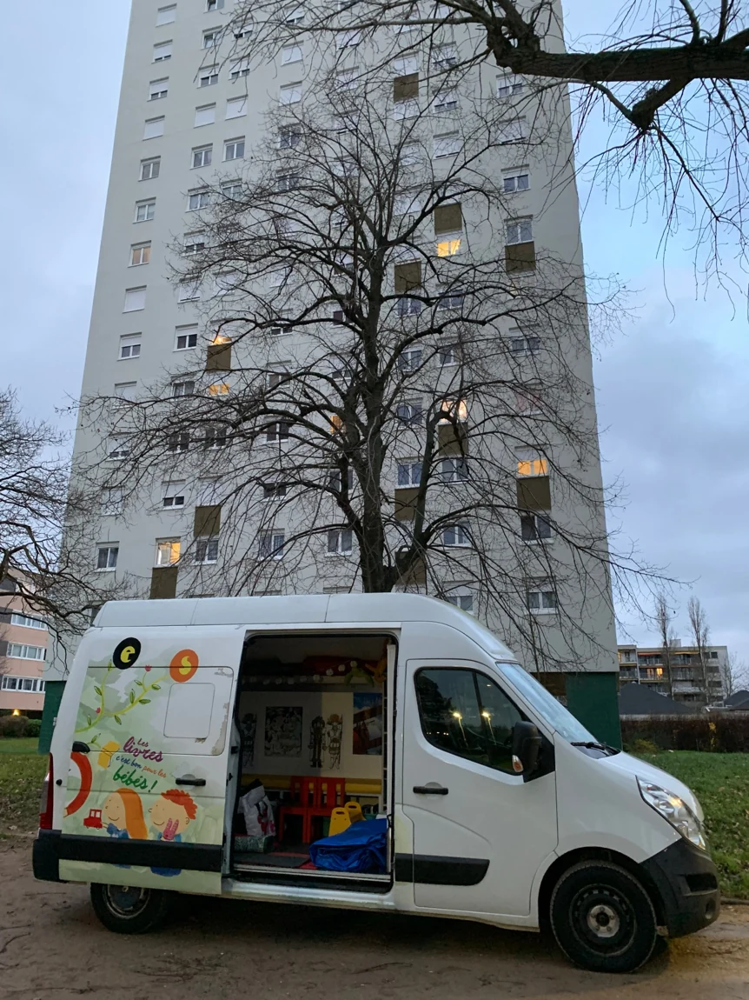

01 / Actions
Lire ensemble
Lectures individuelles au sein d’un petit groupe, albums et kamishibaï.
Explorer les actionsLectures · Formations · Familles
Je suis Nathalie Peine, lectrice et formatrice indépendante et nomade. J’ouvre des espaces pour lire, écouter et partager des récits, dès le plus jeune âge.
Découvrir mes interventions
Les interventions
Un album, une comptine ou un petit théâtre d’images. Chaque rencontre propose une autre manière d’entrer dans une histoire.
Lectures individuelles au sein d’un petit groupe, albums et kamishibaï.
Explorer les actions
Des formations sur mesure pour les équipes de la petite enfance, de la culture et du livre.
Voir les formations
Des temps de lecture, de comptines et de jeux pour les enfants et les adultes qui les accompagnent.
Découvrir les rencontres
Sur la route
Le camion transporte des albums jeunesse et permet d’installer un espace de lecture en plein air. On y vient pour feuilleter, écouter une histoire ou choisir un livre à lire ensemble.
Découvrir le camion
À propos
Lectrice et formatrice indépendante et nomade.
Mon travail s’inscrit dans la démarche de lecture individuelle au sein d’un petit groupe, découverte auprès de l’association A.C.C.E.S. Je laisse chaque enfant choisir son album et sa façon de participer, et je construis mes interventions avec les équipes qui l’accompagnent.
En savoir plus sur ma démarcheLe blog

Un atelier pour faire une place aux mots et aux histoires des mères et de leurs enfants.
Lire l’article
Comment le camion prend place dans un village et invite les enfants à découvrir les albums.
Lire l’article
Une escale de lecture en plein quartier avec la médiathèque Boris Vian et les acteurs locaux.
Lire l’articleContact
Vous souhaitez accueillir une lecture, organiser une formation ou imaginer une rencontre pour les familles ?
Écrire à Nathalie legoutdurecit@gmail.com 06 71 06 19 00